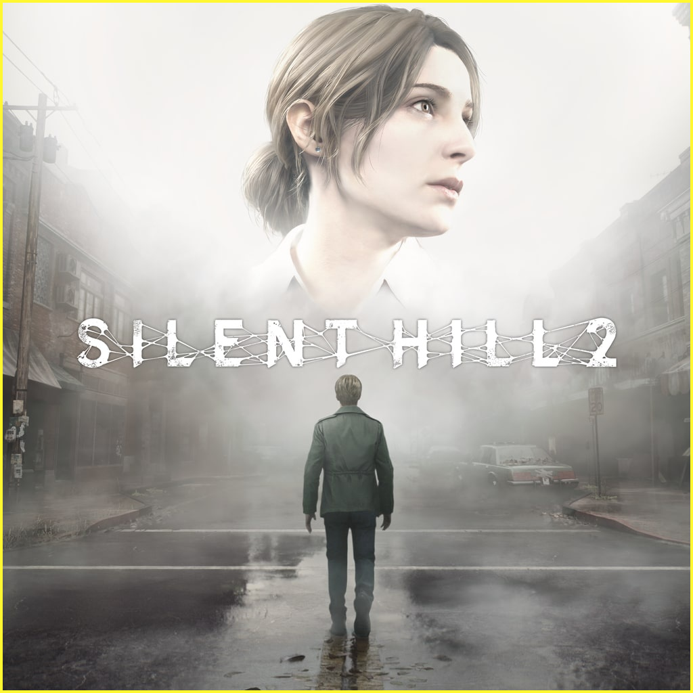
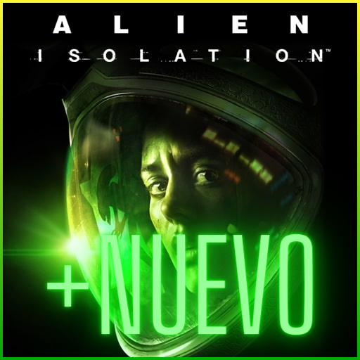

Terror

Silent Hill 2
La historia de Silent Hill 2 al igual que en el videojuego original se desarrolla a comienzos de la década de 1990, en un pequeño y rezagado pueblo rural de Estados Unidos, inicialmente en las zonas despobladas del pueblo de Silent Hill, todo ello siguiendo la estructura de diálogo de James Sunderland y Mary Sunderland en el videojuego original.
Precio: $25.000

Alien Isolation
A diferencia de la mayoría de los demás juegos de la franquicia, en Alien: Isolation solo hay un xenomorfo en la mayor parte del juego, y este no puede ser eliminado, haciendo que el jugador debautilizar tácticas de sigilo para sobrevivir.
Precio: $50.000